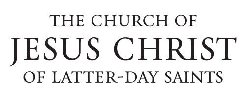
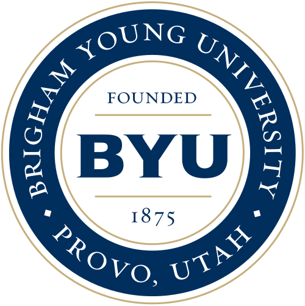

Home Page


 What Is Your Destination? -- April 1972 -- General Conference -- Apostle
What Is Your Destination? -- April 1972 -- General Conference -- Apostle
What Is a Friend? -- October 1972 -- General Conference -- Apostle
Patience Is a Great Power -- Februrary 13, 1973 -- BYU Speeches -- Apostle
In His Strength -- April 1973 -- General Conference -- Apostle
He Took Him by the Hand -- October 1973 -- General Conference -- Apostle
A Time of Urgency -- April 1974 -- General Conference -- Apostle
Who's Losing? -- October 1974 -- General Conference -- Apostle
What Shall We Do Then? -- January 21, 1975 -- BYU Speeches -- Apostle
The Time Is Now -- April 1975 -- General Conference -- Apostle
Love Takes Time -- October 1975 -- General Conference -- Apostle
Family Communications -- April 1976 -- General Conference -- Apostle
Appreciation - Sign of Maturity -- April 13, 1976 -- BYU Speeches -- Apostle
Proper Self-Management -- October 1976 -- General Conference -- Apostle
Family Home Storage -- March 27, 1977 -- BYU Speeches -- Apostle
The Power of Plainness -- April 1977 -- General Conference -- Apostle
Rated A -- October 1977 -- General Conference -- Apostle
N. Eldon Tanner: An Example to Follow -- December 4, 1977 -- BYU Speeches -- Apostle
No Time for Contention -- April 1978 -- General Conference -- Apostle
Who Will Forfeit the Harvest? -- October 1978 -- General Conference -- Apostle
Roadblocks to Progress -- April 1979 -- General Conference -- Apostle
Progress Through Change -- October 1979 -- General Conference -- Apostle
The Prophet and the Prison -- April 1980 -- General Conference -- Apostle
Adversity and You -- October 1980 -- General Conference -- Apostle
We Serve That Which We Love -- April 1981 -- General Conference -- Apostle
“Give with Wisdom That They May Receive with Dignity” -- October 1981 -- General Conference -- Apostle
It's No Fun Being Poor -- March 30, 1982 -- BYU Speeches -- Apostle
"This Is No Harm" -- April 1982 -- General Conference -- Apostle
Pure Religion -- October 1982 -- General Conference -- Apostle
Straightway -- April 1983 -- General Conference -- Apostle
"The Word Is Commitment" -- October 1983 -- General Conference -- Apostle
Choose the Good Part -- April 1984 -- General Conference -- Apostle
"If Thou Endure It Well" -- October 1984 -- General Conference -- Apostle
What Is Your Personal Ranking? -- November 6, 1984 -- BYU Speeches -- Apostle
Spencer W. Kimball: A True Disciple of Christ -- April 1985 -- General Conference -- Apostle
Peace—A Triumph of Principles -- October 1985 -- General Conference -- Apostle
"Be of Good Cheer" -- April 1986 -- General Conference -- Apostle
"Shake Off the Chains with Which Ye Are Bound" -- October 1986 -- General Conference -- Apostle
"I Am an Adult Now" -- April 1987 -- General Conference -- Apostle
Carry Your Cross -- May 3, 1987 -- BYU Speeches -- Apostle
“There Are Many Gifts” -- October 1987 -- General Conference -- Apostle
While They Are Waiting -- April 1988 -- General Conference -- Apostle
Lessons from the Master -- June 5, 1988 -- BYU Speeches -- Apostle
The Measure of Our Hearts -- October 1988 -- General Conference -- Apostle
“He Loveth That Which Is Right” -- March 5, 1989 -- BYU Speeches -- Apostle
On Being Worthy -- April 1989 -- General Conference -- Apostle
1989 Spring Commencement Address -- April 28, 1989 -- BYU Speeches -- Apostle
"Stalwart and Brave We Stand" -- October 1989 -- General Conference -- Apostle
A Still Voice of Perfect Mildness -- February 20, 1990 -- BYU Speeches -- Apostle
"Neither Boast of Faith Nor of Mighty Works" -- April 1990 -- General Conference -- Apostle
A Pattern in All Things -- October 1990 -- General Conference -- Apostle
"A Voice of Gladness" -- April 1991 -- General Conference -- Apostle
"And in Everything Give Thanks" -- September 1, 1991 -- BYU Speeches -- Apostle
"Strengthen the Feeble Knees" -- October 1991 -- General Conference -- Apostle
The Tongue Can Be a Sharp Sword -- April 1992 -- General Conference -- Apostle
Teaching, Mentoring, and Things of the Spirit -- August 24, 1992 -- BYU Speeches -- Apostle
A Yearning For Home -- October 1992 -- General Conference -- Apostle
"Know He Is There" -- November 10, 1992 -- BYU Speeches -- Apostle